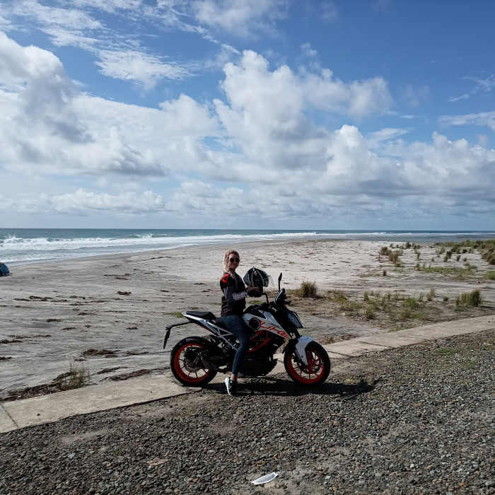
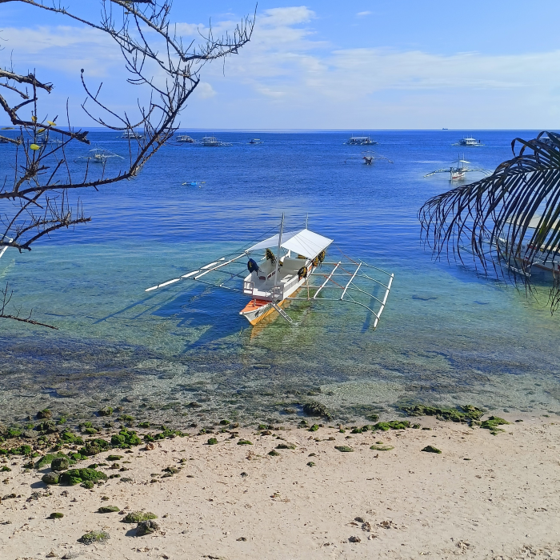
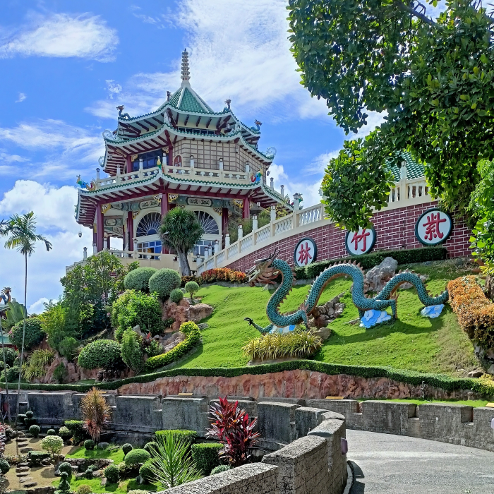
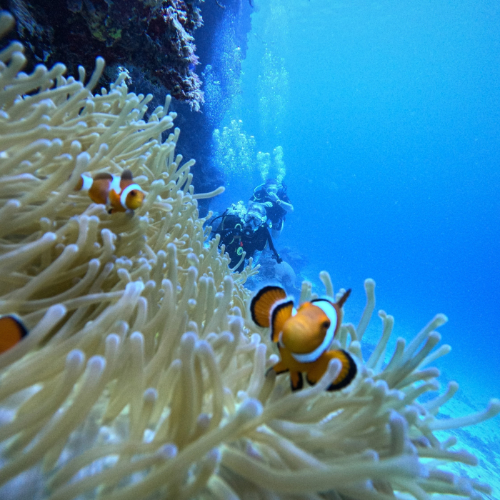
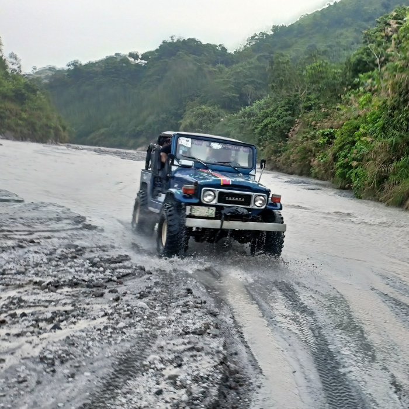
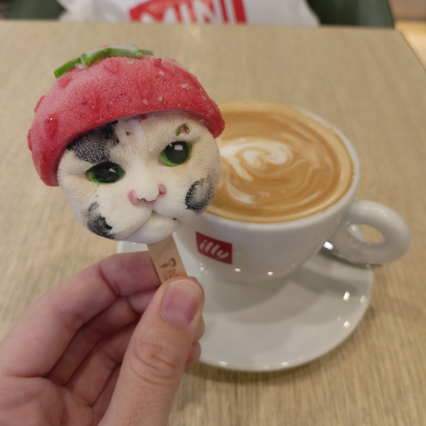
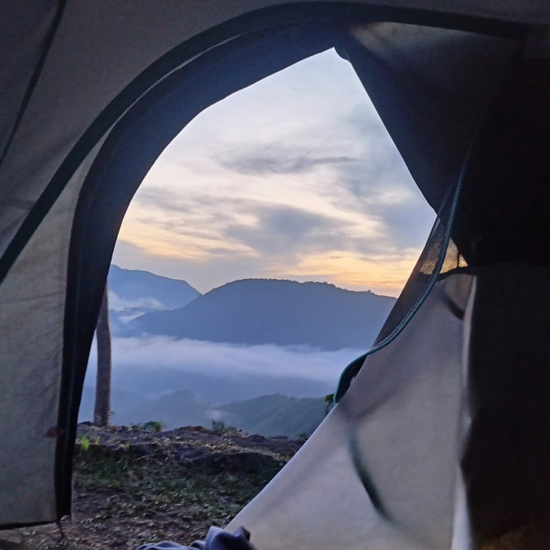

-
Фритрек и нулевой спринт: Подготовка к работе
</HTML> -
1 спринт: Я — чистый лист
 </HTML> -
1 спринт: А если не получится?
 </CSS> -
2 спринт: Погоня за идеалом
 <desigions> -
2 спринт: О тех, кто рядом
 care -
3 спринт: Обходные стратегии
 <support> -
3 спринт: Когда опускаются руки
 <lifes-style: none;> -
«Сейчас я здесь»
 <experience>